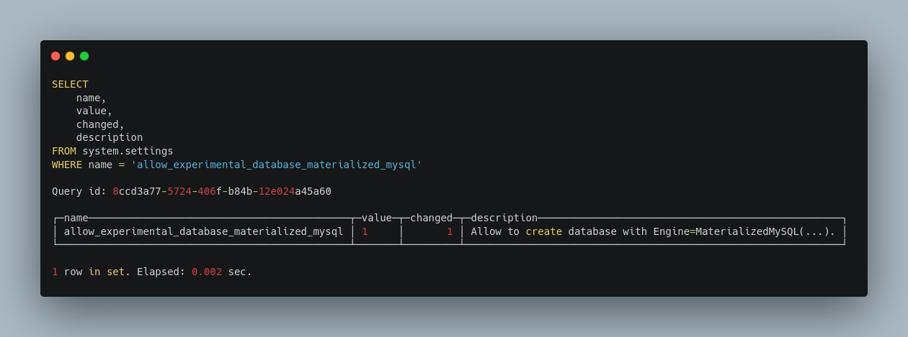
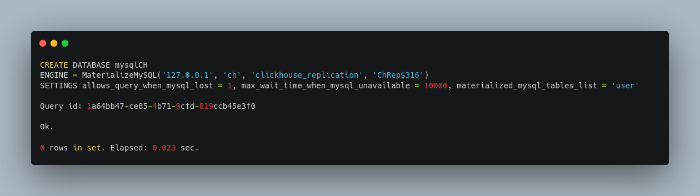
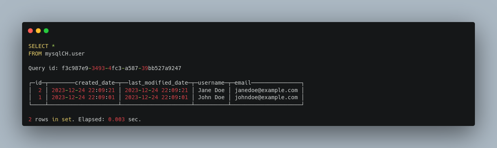
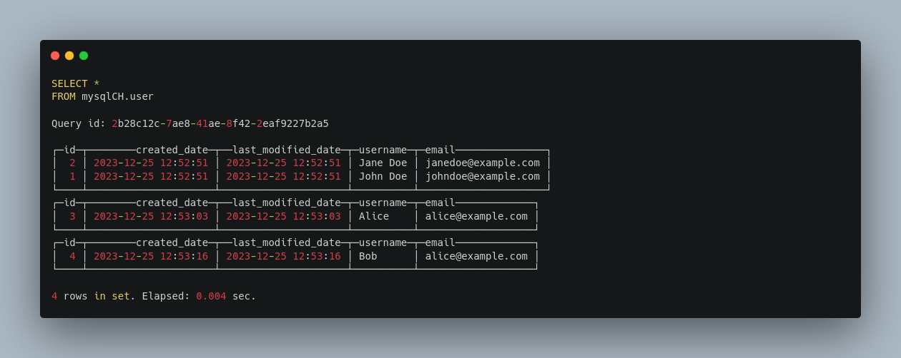
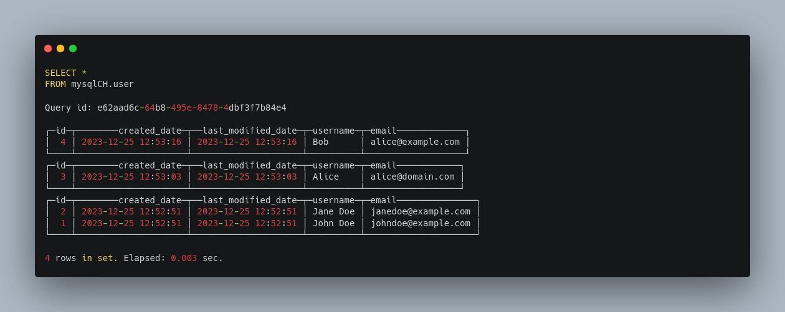
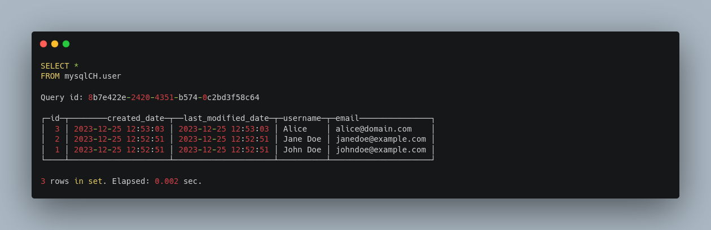

Replicate MySQL database in ClickHouse using [experimental] MaterializedMySQL Database Engine
This post briefly documents the process of replicating database in MySQL into ClickHouse.
MySQL is an open-source relational database management system.
ClickHouse is a fast open-source column-oriented database management system that allows generating analytical data reports in real-time using SQL queries.
Minimum Software Requirements
- MySQL database.
- ClickHouse database.
mysql.cnf MySQL server configuration
The following are mandatory MySQL server configuration which must be set.
Stop MySQL service.
systemctl status mysql
systemctl stop mysql.service
Update the configuration.
sudo nano /etc/mysql/mysql.conf.d/mysqld.cnf
[mysqld]
server-id = 223344
log_bin = mysql-bin
expire_logs_days = 1
binlog_format = row
binlog_row_image = FULL
default_authentication_plugin = mysql_native_password
gtid_mode = on
enforce_gtid_consistency = on
ClickHouse reads binlog and performs DDL and DML queries.
Start MySQL service.
systemctl start mysql.service
Reference: https://clickhouse.com/docs/en/engines/database-engines/materialized-mysql
MySQL user creation for replication
create user clickhouse_replication@'localhost' identified with mysql_native_password by 'ChRep$316';
grant replication slave, replication client, reload, select on *.* to clickhouse_replication@'localhost';
flush privileges;
Sample MySQL Data Setup
Create a table.
CREATE TABLE `user` (
`id` bigint(20) NOT NULL AUTO_INCREMENT,
`created_date` datetime NOT NULL DEFAULT CURRENT_TIMESTAMP,
`last_modified_date` datetime NOT NULL DEFAULT CURRENT_TIMESTAMP,
`username` varchar(255) DEFAULT NULL,
`email` varchar(255) DEFAULT NULL,
PRIMARY KEY (`id`),
UNIQUE KEY `UK_sb8bbouer5wak8vyiiy4pf2bx` (`username`)
) ENGINE=InnoDB DEFAULT CHARSET=utf8mb4;
Insert sample data.
INSERT INTO `user`(`username`,`email`)VALUES('John Doe','johndoe@example.com');
INSERT INTO `user`(`username`,`email`)VALUES('Jane Doe','janedoe@example.com');
CLickHouse server configuration
sudo systemctl status clickhouse-server
sudo systemctl stop clickhouse-server
sudo nano /etc/clickhouse-server/users.xml
Add/Update the following value.
<profiles>
<default> <allow_experimental_database_materialized_mysql>1</allow_experimental_database_materialized_mysql>
</default>
</profiles>
sudo systemctl start clickhouse-server
Login to ClickHouse server using terminal or any GUI tool and verify that the changes have been saved.
clickhouse-client --password
SELECT
name,
value,
changed,
description
FROM system.settings
WHERE name = 'allow_experimental_database_materialized_mysql'

Activating the replication in ClickHouse
CREATE DATABASE mysqlCH
ENGINE = MaterializeMySQL('127.0.0.1', 'ch', 'clickhouse_replication', 'ChRep$316')
SETTINGS allows_query_when_mysql_lost = 1, max_wait_time_when_mysql_unavailable = 10000, materialized_mysql_tables_list = 'user'

Now, check if the database and the table with data got replicated or not.
select * from mysqlCH.user;

INSERT additional rows in MySQL table and check the replication status.
INSERT INTO `user`(`username`,`email`)VALUES('Alice','alice@example.com');
INSERT INTO `user`(`username`,`email`)VALUES('Bob','alice@example.com');

UPDATE Alice's email in MySQL user table.
UPDATE `ch`.`user` SET `email` = 'alice@domain.com' WHERE `username` = 'Alice';

DELETE Bob in MySQL user table.
DELETE FROM `ch`.`user` WHERE (`id` = '4');
